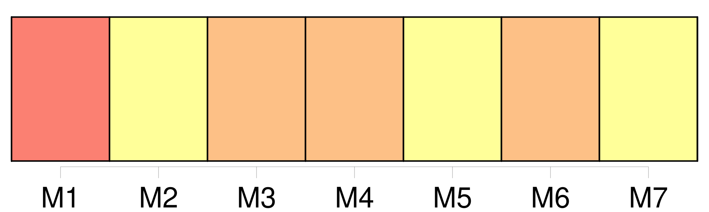

Longueur nb maillons : 29 mentions |
  |
[Des actes de l'état civil] [5 phrases]
[Les actes de l'état civil] énonceront l'année, le jour est l'heure où [ils] seront reçus, les prénoms, noms, âge, profession et domicile de tous ceux qui [y] seront dénommés. [1 phrases]
Les officiers de l'état civil ne pourront rien insérer dans [les actes] [qu'] ils recevront, soit par note, soit par énonciation quelconque, que ce qui doit être déclaré par les comparons. [3 phrases]
Les témoins produits [aux actes de l'état civil] ne pourront être que du sexe masculin, âgés de vingt-un ans au moins, parens ou autres et ils seront choisis par les personnes intéressées. [1 phrases]
L'officier de l'état civil donnera lecture [des actes] aux parties comparant es, ou à leurs fondés de procuration, et aux témoins.
Il [y] sera fait mention de l'accomplissement de cette formalité. [1 phrases]
[Ces actes] seront signés par l'officier de l'état civil, par les comparons et les témoins ; ou mention sera faite de la cause qui empêchera les comparons et les témoins de signer. [1 phrases]
[Les actes de l'état civil] seront inscrits, dans chaque commune, sur un ou plusieurs registres tenus doubles. [3 phrases] [Les actes] seront inscrits sur les registres, de suite, sans aucun blanc. Les ratures et les renvois seront approuvés et signés de la même manière que le corps de [l'acte]
Il n' [y] sera rien écrit par abréviation, et aucune date ne sera mise en chiffres. [3 phrases]
Les procurations et les autres pièces qui doivent demeurer annexées [aux actes de l'état civils] , seront déposées après qu'elles auront été paraphées par la personne qui les aura produites, et par l'officier de l'état civil, au greffe du tribunal, avec le double des registres dont le dépôt doit avoir lieu audit greffe. [6 phrases]
[Tout acte de l'état civil des Français et des étrangers, fait en pays étranger] , fera foi, s' [il] a été rédigé dans les formes usitées dans ledit pays. [1 phrases]
[Tout acte de l'état civil des Français en pays étranger] sera valable s' [il] a été reçu conformément aux lois françaises, par les agens diplomatiques, ou par les commissaires des relations commerciales de la République. [7 phrases]
Toute altération, tout faux dans [les actes de l'état civil] toute inscription de [ces actes] faite sur une feuille volante et autrement que sur les registres à ce destinés, donneront lieu aux dommages-intérêts des parties, sans préjudice des peines portées au Code pénal. [3 phrases]
Dans tous les cas où un tribunal de première instance connaîtra [des actes relatifs à l'état civil] , les parties intéressées pourront se pourvoir contre le jugement. [126 phrases]
L'officier de l'état civil du domicile des parties auquel il aura été envoyé de l'armée expédition d' [un acte de l'état civil] , sera tenu de l'inscrire de suite sur les registres. [1 phrases]
De la rectification [des actes de l'état civil] [1 phrases] Lorsque la rectification d' [un acte de l'état civil] sera demandée, il y sera statué sauf l'appel par le tribunal compétent, et sur les conclusions du commissaire du Gouvernement. [4 phrases]
Les jugemens de rectification seront inscrits sur les registres par l'officier de l'état civil, aussitôt qu'ils lui auront été remis ; et mention en sera faite en marge de [l'acte réformé] [169 phrases]
Les deux publications ordonnées par l'article 63, au titre [des Actes de l'état civil] , seront faites à la municipalité du lieu où chacune des parties contractantes aura son domicile. [7 phrases]
Le mariage contracté en pays étranger entre Français, et entre Français et étranger, sera valable s'il a été célébré dans les formes usitées dans le pays, pourvu qu'il ait été précédé des publications prescrites par l'article 63, au titre [des Actes de l'état civil] , et que le Français n'ait point contrevenu aux dispositions contenues au chapitre précédent. [57 phrases]
Nul ne peut réclamer le titre d'époux et les effets civils du mariage, s'il ne représente un acte de célébration inscrit sur le registre de l'état civil, sauf les cas prévus par l'article 46 au titre [des Actes de l'état civil] |
La ressource peut être téléchargée sur la page Ortolang
Si vous avez des questions ou vous voyez des erreurs, merci d'envoyer un mail à silvia.federzoni89@gmail.com
Site développé par S. Federzoni (contact)